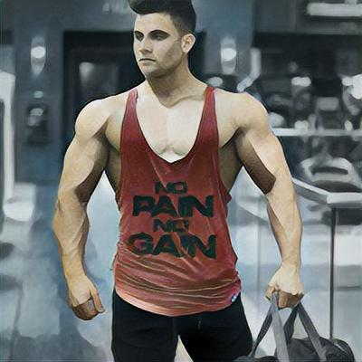
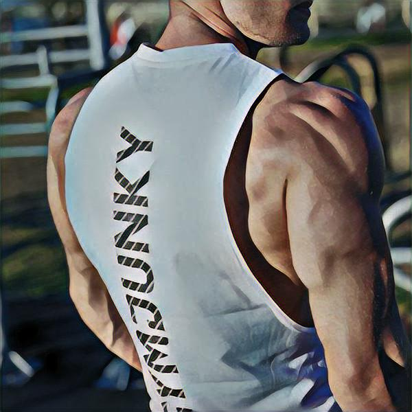
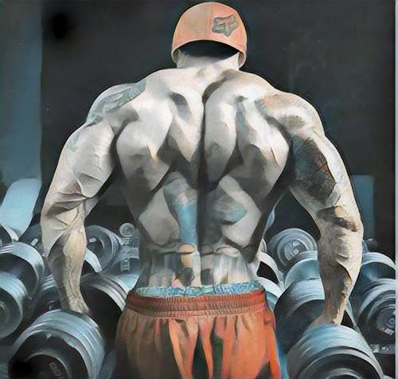
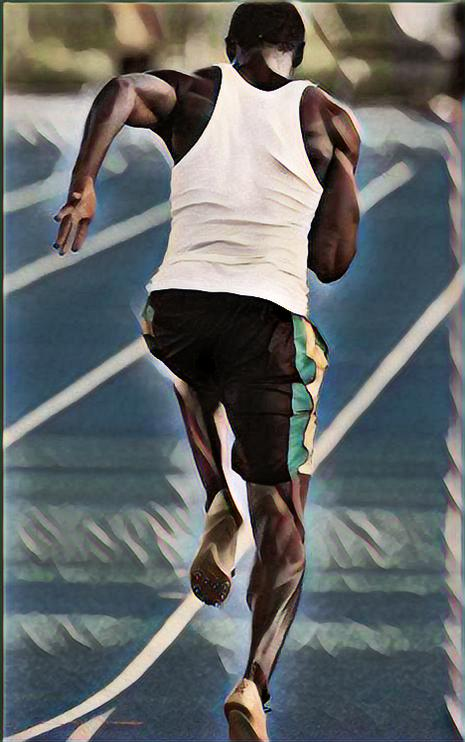
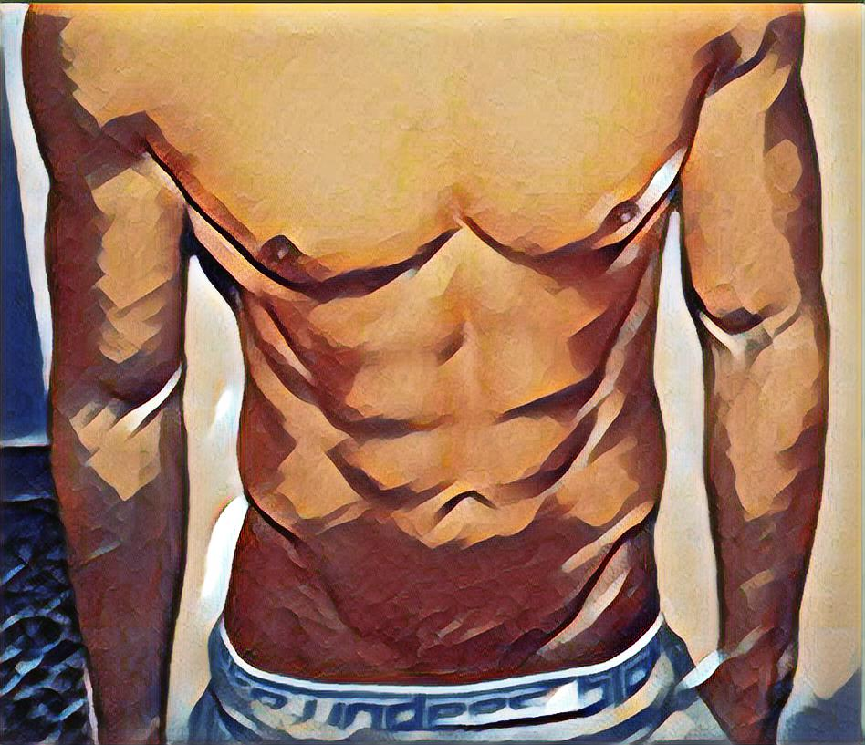

胸部肌群〈chest〉
人体上半身胸腔当中，最显而易见的重要肌群，即是胸部肌群，主要包含胸大肌、胸小肌以及前锯肌。
一般来说，胸部肌群中的胸大肌是相当容易训练的肌肉之一；只要有良好的锻链过程、排定适当的处方，就会有明显的成效；甚至自我从事俯卧撑运动一段时日之后，我们可以说大都能使男性都能拥有“厚实的胸膛 。
至于女性亦能摆脱传统的错误观念，训练胸部肌群会使“胸部变小、胸形变丑”的事实，进而拥有“托高胸部、维持胸形”的良好效果呢！
其次我们知道胸肌的功能，除了保护胸腔之外，就是保持人体上半身的稳定、协助手臂肌群，应付一切有关于身体必须的推撑动作，达到身体应付外界变化的功能。例如，人之推动前方物品，达到作功的效果。
人体上半身胸腔当中，最显而易见的重要肌群，即是胸部肌群，主要包含胸大肌、胸小肌以及前锯肌。
一般来说，胸部肌群中的胸大肌是相当容易训练的肌肉之一；只要有良好的锻链过程、排定适当的处方，就会有明显的成效；甚至自我从事俯卧撑运动一段时日之后，我们可以说大都能使男性都能拥有“厚实的胸膛 。
至于女性亦能摆脱传统的错误观念，训练胸部肌群会使“胸部变小、胸形变丑”的事实，进而拥有“托高胸部、维持胸形”的良好效果呢！
其次我们知道胸肌的功能，除了保护胸腔之外，就是保持人体上半身的稳定、协助手臂肌群，应付一切有关于身体必须的推撑动作，达到身体应付外界变化的功能。例如，人之推动前方物品，达到作功的效果。
肩部肌群〈shoulder〉
肩部肌群主要有三角肌以及斜方肌所构成。我们知道肩膀肌肉所伴随的是手臂运动与上身的活动；然而因为肩部关节的构造功能，原本就为了活动度与运用性，而呈现比较松弛以利运动的状态；因此我们也由于手臂的经常使用，使得肩部的受伤机会相对的提高
正如同投掷的动作，如果使用不当是很容易拉伤肩部肌肉与动摇韧带的稳定性，使得造成肩部关节的伤害。再者，更应该注意如果不当的过度使用肩部，它所造成之伤害，将是很难再恢复成原来功能的，就如同棒球之投手肩一般。

肩部肌群主要有三角肌以及斜方肌所构成。我们知道肩膀肌肉所伴随的是手臂运动与上身的活动；然而因为肩部关节的构造功能，原本就为了活动度与运用性，而呈现比较松弛以利运动的状态；因此我们也由于手臂的经常使用，使得肩部的受伤机会相对的提高
正如同投掷的动作，如果使用不当是很容易拉伤肩部肌肉与动摇韧带的稳定性，使得造成肩部关节的伤害。再者，更应该注意如果不当的过度使用肩部，它所造成之伤害，将是很难再恢复成原来功能的，就如同棒球之投手肩一般。

背部肌群〈back〉
背部肌群是由阔背肌与脊柱站立肌群所组成，我们一般的背肌训练处方，都是搭配胸部肌群来从事上半身的训练，借由推拉原理使得有稳定上半身的效果。然而，事实上就我们所了解看来，因为背部肌群原本就不甚发达，而平时也就较不常感觉到背部肌肉的作用；亦即如果不刻意用力伸展背部、特别的展现，是不易看见身体的背部肌肉线条但是，背肌又是人体上半身的重要肌群；因此，可知它是多么地需要训练。
我们只要持续不间断地从事背部肌肉训练，将能使背部线条逐渐明显、肌肉慢慢肥大，拥有稳定的上半身强健的身材。
并且，尤其是“下背部”的肌群更是值得注意的地方，它是人体体态维持重要的肌群之一，也是最容易因各种姿势不良而使得人们拥困扰的文明病之一--俗称“下背痛”就是此产生疼痛之处。
背部肌群是由阔背肌与脊柱站立肌群所组成，我们一般的背肌训练处方，都是搭配胸部肌群来从事上半身的训练，借由推拉原理使得有稳定上半身的效果。然而，事实上就我们所了解看来，因为背部肌群原本就不甚发达，而平时也就较不常感觉到背部肌肉的作用；亦即如果不刻意用力伸展背部、特别的展现，是不易看见身体的背部肌肉线条但是，背肌又是人体上半身的重要肌群；因此，可知它是多么地需要训练。
我们只要持续不间断地从事背部肌肉训练，将能使背部线条逐渐明显、肌肉慢慢肥大，拥有稳定的上半身强健的身材。
并且，尤其是“下背部”的肌群更是值得注意的地方，它是人体体态维持重要的肌群之一，也是最容易因各种姿势不良而使得人们拥困扰的文明病之一--俗称“下背痛”就是此产生疼痛之处。
腿部肌群〈thighs〉
腿部肌群主要是指大腿部位的整体肌群而言，包括股四头肌与腿后肌群等等，而且我们亦可以将此腿部肌群称谓人体下半身之最重要肌群 所以举凡跑、走、蹲、站的一切活动，样样行为都得利用到腿部的肌群。
一般而言，由于腿部肌群不常被人们做特别的训练，所以只要经过活动使用，例如出门逛逛街或是假日爬爬山，当天就会有无力感，而隔日便会觉得腿部相当酸痛。
因此，我们可以了解这是由于腿部肌肉平时不使用而逐渐变得衰老之故；所以平时不习惯奔跑动作，即使很轻松的慢跑运动，日后也会产生搞乱身体状况的情形。
由此可知，如果长期不重视腿部肌肉适能的话，虽然不会有身体立即的伤害，但是日渐失去的肌肉适能将影响身体健康，所以必须耐心地持续训练腿部肌群，才能维持腿部的适能、避免疲劳的过早发生，我们从事慢跑运动即是常见亦很有效的训练腿部之运动项目。

腿部肌群主要是指大腿部位的整体肌群而言，包括股四头肌与腿后肌群等等，而且我们亦可以将此腿部肌群称谓人体下半身之最重要肌群 所以举凡跑、走、蹲、站的一切活动，样样行为都得利用到腿部的肌群。
一般而言，由于腿部肌群不常被人们做特别的训练，所以只要经过活动使用，例如出门逛逛街或是假日爬爬山，当天就会有无力感，而隔日便会觉得腿部相当酸痛。
因此，我们可以了解这是由于腿部肌肉平时不使用而逐渐变得衰老之故；所以平时不习惯奔跑动作，即使很轻松的慢跑运动，日后也会产生搞乱身体状况的情形。
由此可知，如果长期不重视腿部肌肉适能的话，虽然不会有身体立即的伤害，但是日渐失去的肌肉适能将影响身体健康，所以必须耐心地持续训练腿部肌群，才能维持腿部的适能、避免疲劳的过早发生，我们从事慢跑运动即是常见亦很有效的训练腿部之运动项目。

腹部肌群〈abdominal〉
“身体腹部”应该是人们对于自己身体体态当中，最在意的部位之一，而且也常因它而不知所措，总是认为如果可以小点、或是有几块腹肌那就更好了。然而，我们知道造成小腹的因素有很多原因，有些是由于吃喝玩乐之因、有些是来自于天生；但是综合观之，除了人的惰性之外，就是包括遗传与体型体态的差异等因素了。
因此，我们若排除天生因素，首先从它的构造来了解，可知主要是由腹内斜肌、腹外斜肌以及腹直肌所构成。其次我们就肌肉性质而言，也由于它的功能构造是属于维持稳定体态的肌群，所以训练方法就必须是“高次数、低强度”的训练模式。
我们可以以如同训练腹肌常见的“仰卧起坐”来看，缓慢的训练并将时间拉长，将能有训练效果；而非快速的反覆动作，因为这将会快速疲劳而失去效果。笔者的建议是再搭配为长时间的慢跑运动〈每周3-5次，每次 30分钟〉，是最佳的方法之一。
“身体腹部”应该是人们对于自己身体体态当中，最在意的部位之一，而且也常因它而不知所措，总是认为如果可以小点、或是有几块腹肌那就更好了。然而，我们知道造成小腹的因素有很多原因，有些是由于吃喝玩乐之因、有些是来自于天生；但是综合观之，除了人的惰性之外，就是包括遗传与体型体态的差异等因素了。
因此，我们若排除天生因素，首先从它的构造来了解，可知主要是由腹内斜肌、腹外斜肌以及腹直肌所构成。其次我们就肌肉性质而言，也由于它的功能构造是属于维持稳定体态的肌群，所以训练方法就必须是“高次数、低强度”的训练模式。
我们可以以如同训练腹肌常见的“仰卧起坐”来看，缓慢的训练并将时间拉长，将能有训练效果；而非快速的反覆动作，因为这将会快速疲劳而失去效果。笔者的建议是再搭配为长时间的慢跑运动〈每周3-5次，每次 30分钟〉，是最佳的方法之一。